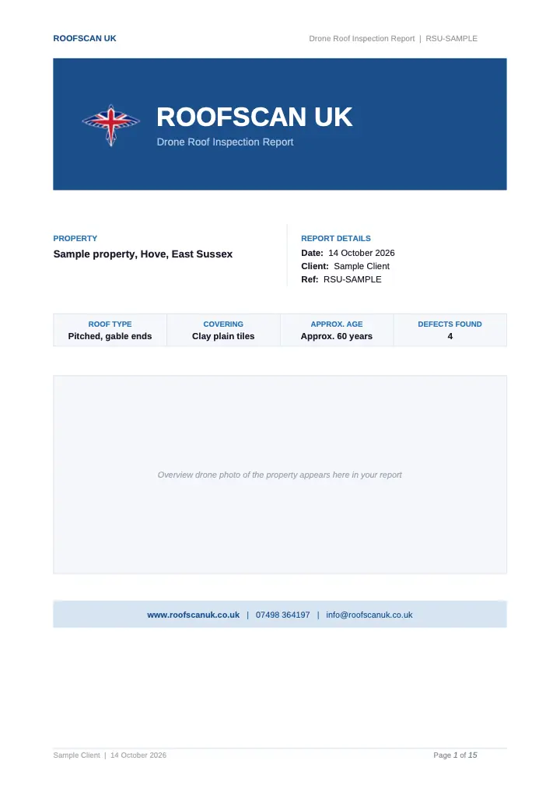
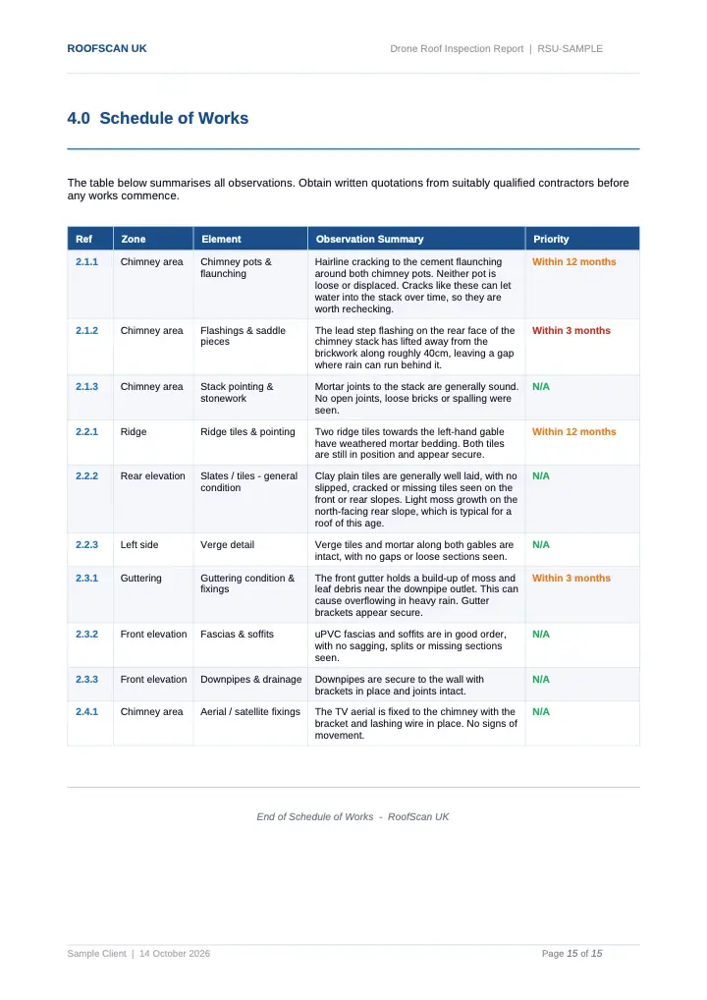

The short answer
A RoofScan UK report is a PDF with photos of every part of the roof, a Satisfactory, Monitor or Repair Required rating for each part, a RoofScore out of 100 and a schedule of works you can hand to a roofer. It arrives within 5 working days of your balance payment, or within 24 hours with Express.
The report below is a sample. The property, client and findings are made up to show the layout: sample property in Hove, East Sussex, report reference RSU-SAMPLE, dated 14 October 2026. In the sample, shaded boxes mark where the drone photos go in a real report. Download the full 15 page sample report (PDF).
What the 15 pages contain
- Cover page (page 1). The property, the date, the report reference and the client.
- Contents and executive summary (pages 2 to 4). A condition dashboard counts how many items are Satisfactory, Monitor or Repair Required. In the sample that is 6 Satisfactory, 3 Monitor and 1 Repair Required. An overall RoofScore out of 100 is shown with four group scores: chimneys and leadwork, roof coverings, rainwater goods and ancillary elements. A plain summary says what matters most, and a findings list rates each zone: chimney area, ridge, rear elevation, left side, guttering and front elevation. A short key risks list explains what could happen if an item is left.
- About this report (page 6). The property, the inspection date, who it was prepared for and the scope. It states that the report is based on drone imagery taken on site and that it is not a full building survey.
- Limitations. All observations are from imagery only, and no physical contact with the roof is made. Where something could not be seen, for example how gutters behave in live rain, the report says so.
- The traffic light system. Repair Required means a defect that needs remedial action. Monitor means it warrants attention but is not immediately critical. Satisfactory means no immediate action is required.
- Observations by area (pages 8 to 11). Chimneys and leadwork, roof coverings, rainwater goods and ancillary elements such as aerials. Each observation has a reference number, a space for the drone photo, a rating, a plain description and a priority.
- Terms and disclaimer (pages 12 and 13). Confidentiality, scope limits, liability and regulatory notes.
- Schedule of works (pages 14 and 15). A table of every observation with its zone, a summary and a priority, written so you can ask roofers for quotes against the same list.
Real pages from the sample

Text on this page
- Property
- Sample property, Hove, East Sussex
- Date
- 14 October 2026
- Client
- Sample Client
- Ref
- RSU-SAMPLE
- Roof type
- Pitched, gable ends
- Covering
- Clay plain tiles
- Approx. age
- Approx. 60 years
- Defects found
- 4
Overview drone photo of the property appears here in your report.
![Page 3 of the sample report, the executive summary. Condition dashboard: 1 item Repair Required, 3 Monitor, 6 Satisfactory. Overall roof condition on a scale from Poor to Excellent: Good. RoofScore 78 out of 100, good with some elements to monitor. Group scores: chimneys and leadwork 64, roof coverings 84, rainwater goods 76, ancillary 92. A summary of findings and a list of findings by zone: chimney area Repair Required, ridge Monitor, rear elevation Satisfactory, left side Satisfactory, guttering Monitor, front elevation Satisfactory.](sample-report-page-3.webp)
Text on this page
Condition dashboard: 1 Repair Required, 3 Monitor, 6 Satisfactory. Overall roof condition: Good.
RoofScore 78/100, good: some elements to monitor. Chimneys and leadwork 64/100. Roof coverings 84/100. Rainwater goods 76/100. Ancillary 92/100.
Summary of findings: The roof is in good overall condition for its age. The main concern is the lifted lead flashing on the rear of the chimney stack, which should be repaired within the next three months to stop water getting into the stack. Three other items are worth keeping an eye on: the chimney flaunching, two ridge tiles near the left-hand gable, and debris in the front gutter. No slipped or missing tiles were seen on either slope.
Findings by zone: Chimney area Repair Required Ridge Monitor Rear elevation Satisfactory Left side Satisfactory Guttering Monitor Front elevation Satisfactory
![Page 4 of the sample report: key risks and maintenance overview. Key risks: lifted lead flashing at the rear of the chimney stack could let water into the loft or chimney breast during heavy rain; debris in the front gutter could cause overflowing and damp patches on the front wall if not cleared. Maintenance overview: have a roofer refix and seal the chimney flashing within 3 months; clear the front gutter and check the outlet before winter; repoint the two ridge tiles and recheck the chimney flaunching within 12 months; book a follow-up drone inspection in 12 months to track the monitored items.](sample-report-page-4.webp)
Text on this page
Key risks: Lifted lead flashing at the rear of the chimney stack could let water into the loft or chimney breast during heavy rain. Debris in the front gutter could cause overflowing and damp patches on the front wall if not cleared.
Maintenance overview: Have a roofer refix and seal the chimney flashing within 3 months. Clear the front gutter and check the outlet before winter. Repoint the two ridge tiles and recheck the chimney flaunching within 12 months. Book a follow-up drone inspection in 12 months to track the monitored items.
Page 6, about this report (example)
This page lists the report details, the scope, the limitations and the traffic light system. The example below shows the layout; in a real report the names of the people who wrote and approved it appear in place of the brackets.
- Property
- Sample property, Hove, East Sussex
- Inspection date
- 14 October 2026
- Client
- Sample Client
- Prepared by
- [report writer name]
- Approved by
- [approver name]
- Report reference
- RSU-SAMPLE
Scope. Instructions were received to attend the property and undertake a drone-based visual inspection. This report has been prepared based on drone imagery captured on site. It does not constitute a full building survey.
Limitations. The inspection was carried out using an unmanned aerial vehicle (drone). All observations are based on visual imagery only. No physical contact with roof surfaces was made.
Traffic light system. Repair Required A defect requiring remedial action. Monitor Warrants attention but not immediately critical. Satisfactory No immediate action required.
![Page 8 of the sample report: observations and recommendations for chimneys and leadwork, inspected by drone only. Ref 2.1.1 chimney pots and flaunching, rated Monitor: hairline cracking to the cement flaunching around both chimney pots, priority within 12 months. Ref 2.1.2 flashings and saddle pieces, rated Repair Required: the lead step flashing on the rear face of the stack has lifted along roughly 40cm, priority within 3 months. Ref 2.1.3 stack pointing and stonework, rated Satisfactory: mortar joints generally sound. Each item has a box where its drone photo appears in a real report.](sample-report-page-8.webp)
Text on this page
Observations are made as if standing at the front of the property. The chimney stacks are the most exposed elements and common sources of water ingress. Chimney elements inspected by drone only. No physical access to the stack was undertaken.
Hairline cracking to the cement flaunching around both chimney pots. Neither pot is loose or displaced. Cracks like these can let water into the stack over time, so they are worth rechecking.
The lead step flashing on the rear face of the chimney stack has lifted away from the brickwork along roughly 40cm, leaving a gap where rain can run behind it.
Mortar joints to the stack are generally sound. No open joints, loose bricks or spalling were seen.

Text on this page
The table below summarises all observations. Obtain written quotations from suitably qualified contractors before any works commence. The ratings shown here come from the observation pages (8 to 11).
Hairline cracking to the cement flaunching around both chimney pots. Neither pot is loose or displaced. Cracks like these can let water into the stack over time, so they are worth rechecking.
The lead step flashing on the rear face of the chimney stack has lifted away from the brickwork along roughly 40cm, leaving a gap where rain can run behind it.
Mortar joints to the stack are generally sound. No open joints, loose bricks or spalling were seen.
Two ridge tiles towards the left-hand gable have weathered mortar bedding. Both tiles are still in position and appear secure.
Clay plain tiles are generally well laid, with no slipped, cracked or missing tiles seen on the front or rear slopes. Light moss growth on the north-facing rear slope, which is typical for a roof of this age.
Verge tiles and mortar along both gables are intact, with no gaps or loose sections seen.
The front gutter holds a build-up of moss and leaf debris near the downpipe outlet. This can cause overflowing in heavy rain. Gutter brackets appear secure.
uPVC fascias and soffits are in good order, with no sagging, splits or missing sections seen.
Downpipes are secure to the wall with brackets in place and joints intact.
The TV aerial is fixed to the chimney with the bracket and lashing wire in place. No signs of movement.
Pages shown as images from the sample report PDF, with the same words written out under each page. Page 6 is shown as an example above.
How people use the report
- Buying a house: see the roof condition before you commit, and ask for a price change or repairs.
- Landlords and managers: a dated record of roof condition across properties.
- After a storm: a record of what the roof looked like.
- Before you pay a roofer: an independent list to show any roofer. RoofScan UK only inspects and reports and does no repairs, so there is no reason for the report to find you work.
What it does not cover
A drone inspection looks at the outside of the roof. It cannot see under the covering or inside the roof space, and it is not a building survey.
See the prices: how much a drone roof inspection costs.
Questions people ask
What does a drone roof inspection report include?
Photos, a rating for each part of the roof, a RoofScore out of 100, written findings and a schedule of works.
What do Satisfactory, Monitor and Repair Required mean?
Satisfactory is no immediate action. Monitor is worth watching. Repair Required is a defect that needs attention.
How long does the report take?
Within 5 working days of the balance payment, or 24 hours with Express.
Can I show the report to a roofer?
Yes. The schedule of works is written for that.